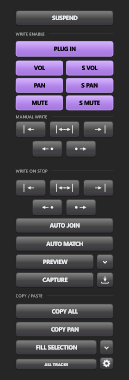

Choose your parameters
Write Enable gates plug-in parameters, track volume/pan/mute and send volume/pan/mute. PAN includes ReaSurround and ReaSurroundPan.
EA NATIVE AUTOMATION · v2.2.4
FOR REAPER / AUDIO POSTA familiar workflow. A native REAPER panel. Built while moving from Pro Tools to REAPER, for the people working in audio post.
Windows x64 binary available.
macOS/Linux source only; binaries and platform testing pending.

WHY I MADE IT
Switching from Pro Tools, I wanted a compact automation window that felt familiar in a post session. REAPER’s scripting and extension capabilities made it possible to build one around its own automation system.
THE AUTOMATION WORKFLOW
Keep the controls you reach for together, then put the actions under your own keyboard shortcuts.
Write Enable gates plug-in parameters, track volume/pan/mute and send volume/pan/mute. PAN includes ReaSurround and ReaSurroundPan.
Hold values in Preview and suspend/resume it for A/B comparison. Capture scoped values, or Ctrl/Cmd-click Capture for selected tracks with a blinking indicator.
Five Manual Write ranges and five Write on Stop modes. A successful Manual Write exits Preview. Writing the full session without a time selection asks for confirmation.
Copy All or Copy Pan. Paste at cursor, stretch to selection, or repeat/fill to selection. Ordinary envelope points are the default; automation items are optional.
Paste automation across tracks using parameter matching. Sends use existing routing: match the bus first, then the send slot. Missing parameters are reported.
Auto Join, Auto Match, track scope and automation modes stay in reach. Suspend bypasses existing envelopes and restores their previous activation when released.
MAKE IT FIT YOUR SESSION
Float the panel, dock it beneath Master or use a shallow horizontal layout. The controls adapt to the space available.

Actual REAPER captures: left docking beneath Master and shallow horizontal docking. Open the image for the full-size view.
Theme backgrounds and exposed accent colours carry into the panel. Choose Follow REAPER or five additional panel styles. Rounded buttons, vector icons and press feedback complete the interface.
Docking/undocking, Docker selection, themes, size, track scope, automation modes, startup settings and the running version are available from the panel’s right-click menu.
Auto adapts to the monitor. Dock layouts adapt to the available space; cramped layouts scroll when needed.
PUT IT UNDER YOUR FINGERS
All 88 individual actions, plus the panel toggle, are registered in REAPER’s Main Actions list. Modifier-click functions also have separate actions.
Search EA: Automation, choose an action, then use Add in the shortcut area. The actions also work in toolbars and custom actions.
Full action referenceINSTALL / VERSION 2.2.4
The package installs the Windows x64 extension and matching Lua engine together. Restart REAPER after installation or updating.
Paste this URL into ReaPack: Import repositories.
Open repository indexIn REAPER, run ReaPack: Import repositories and paste the URL above.
Open ReaPack: Browse packages, search for EA Native Automation, choose Install, then Apply.
Restart REAPER. In the Actions list, run EA: Native Automation (JUCE) - toggle panel.
Windows 10/11 x64 and 64-bit REAPER. macOS/Linux source and build configurations are available, but installable binaries and platform testing are pending. No separate JUCE, ReaImGui or Lua installation is required.
Using the older standalone panel? Disable its startup option and close it before using this native extension. Enable Run at startup in the native panel menu if you want it to open with REAPER.
CURRENT TESTING STATUS
This is a tool still being tested in live REAPER sessions. Reproducible reports help identify where the host behaves differently.
Track volume and ordinary track pan Manual Write have reported cases of cursor dips/two points instead of the selected-range write, along with unexpected envelope-lane visibility. Recent hotfixes address these paths, but live confirmation remains pending.
If you encounter a problem, include the running version, affected parameter, Preview state, track scope and whether a time selection was present. The engine can write ManualWrite-diagnostics.txt beside engine.lua when verification fails.
Automated Windows and host-model checks do not verify every live REAPER behaviour. macOS/Linux compilation and live platform checks remain pending.
Validation detailsA familiar workflow.
A REAPER session.